Propofol-Model.RmdBuilding and evaluation of a PBPK model for propofol in adults
| Version | 1.0-OSP11.0 |
|---|---|
| based on Model Snapshot and Evaluation Plan | https://github.com/Open-Systems-Pharmacology/Propofol-Model/releases/tag/v1.0 |
| OSP Version | 11.0 |
| Qualification Framework Version | 3.0 |
This evaluation report and the corresponding PK-Sim project file are filed at:
https://github.com/Open-Systems-Pharmacology/OSP-PBPK-Model-Library/
1 Introduction
The presented model building and evaluation report evaluates the performance of a PBPK model for propofol in adults.
Propofol is an anaesthetic agent used for induction and maintenance of general anaesthesia. Propofol is only given intravenously and is mainly metabolized by Uridine 5’-diphospho-glucuronosyltransferase 1A9 (UGT1A9) (53-70%) (Al-Jahdari 2006, Restrepo 2009). The final propofol model features metabolism by UGT1A9 and to a minor extent by Cytochrome P450 2B6 (CYP2B6) (Al-Jahdari 2006, Oda 2009). Additionally, there is excretion via glomerular filtration. The model adequately describes the pharmacokinetics of propofol in adults.
The propofol model is a whole-body PBPK model, allowing for dynamic translation between individuals with organs expressing UGT1A9. The propofol report demonstrates the level of confidence in the propofol PBPK model build with the OSP suite with regard to reliable predictions of propofol PK adults during model-informed drug development.
2 Methods
2.1 Modeling strategy
The general concept of building a PBPK model has previously been described by Kuepfer et al. (Kuepfer 2016). Relevant information on anthropometric (height, weight) and physiological parameters (e.g. blood flows, organ volumes, binding protein concentrations, hematocrit, cardiac output) in adults was gathered from the literature and has been previously published (Schlender 2016). The information was incorporated into PK-Sim® and was used as default values for the simulations in adults.
The applied activity and variability of plasma proteins and active processes that are integrated into PK-Sim® are described in the publicly available PK-Sim® Ontogeny Database Version 7.3 (PK-Sim Ontogeny Database Version 7.3) or otherwise referenced for the specific process.
First, a base mean model was built using data from the single dose escalation study to find an appropriate structure describing the PK of propofol. The mean PK model was developed using a typical European individual. Unknown parameters were identified using the Parameter Identification module provided in PK-Sim®. Structural model selection was mainly guided by visual inspection of the resulting description of data and biological plausibility.
A final PBPK model was established and simulations were compared to the reported data to evaluate model appropriateness and to assess model qualification, by means of diagnostics plots and predicted versus observed concentration-time profiles, of which the results support an adequate prediction of the PK in adults.
During model building, uncertainties in data quality, as well as study differences may cause not being able to adequately describe the PK of all reported clinical studies.
2.2 Data used
2.2.1 In vitro / physicochemical data
A literature search was performed to collect available information on physicochemical properties of propofol. The obtained information from literature is summarized in the table below, and is used for model building.
| Parameter | Unit | Literature value (reference) | Description |
|---|---|---|---|
| MW | g/mol | 178.2707 (Drugbank.ca) | Molecular weight |
| pKa | 10.1 (Drugbank.ca) | Acid dissociation constant | |
| Solubility (pH) | mg/L | 124 (7) (Drugbank.ca) | Solubility |
| logP (pH 7) | 0.58 (Moss 2012) | Partition coefficient between octanol and water | |
| fu | 0.024 (Takizawa 2005) | Fraction unbound | |
| Km,u UGT1A9 | mM | 0.12 (Al-Jahdari 2006) | Unbound Michaelis-Menten constant |
| Vmax UGT1A9 | nmol/min/mg | 2.40 (Al-Jahdari 2006) | Maximum rate of reaction |
| Km,u CYP2B7 | mM | 0.03 (Al-Jahdari 2006) | Unbound Michaelis-Menten constant |
| Vmax CYP2B7 | nmol/min/mg | 1.08 (Al-Jahdari 2006) | Maximum rate of reaction |
2.2.2 Clinical data
A literature search was performed to collect available clinical data on propofol in adults.
The following publications were used in adults for model building and evaluation, of which individual patient data was available for download under http://opentci.org/data/propofol:
| Publication | Study description |
|---|---|
| Gepts 1987 | Disposition of propofol administered as constant rate intravenous infusion in humans |
| Schnider 1998 | Influence of administration rate on propofol plasma-effect site equilibrium |
| Struys 2007 | The influence of method of administration and covariates on the pharmacokinetics of propofol in adult volunteers |
2.3 Model parameters and assumptions
2.3.2 Distribution
Takizawa et al. (Takizawa 2005) published a fu in humans to be 0.024. Mazoit et al. (Mazoit 1999) reported that propofol binds to almost exclusively to serum albumin as plasma protein, which is built-in as such in the PBPK model.
After testing the available organ-plasma partition coefficient and cell permeability calculation methods built in PK-Sim, observed clinical data was best described by choosing the partition coefficient calculation and cell permeability calculation by PK-Sim standard. Specific organ permeability normalized to surface area was automatically calculated by PK-Sim.
2.3.3 Metabolism and Elimination
Propofol undergoes fast biotransformation to different metabolites.(Restrepo 2009) In vitro studies show that particularly the UGT1A9 (Court 2005) is involved, followed by CYP2B6 (Oda 2001).
Al-Jahdari et al. (Al-Jahdari 2006) investigated the contribution of the liver and kidneys to propofol metabolism in humans using an in vitro–in vivo scale up approach. Human kidney and liver microsomal incubations confirmed the dominant role of UGT metabolism for propofol. Propofol was in particular metabolized by UGT1A9 and CYP2B6. The apparent arithmetic mean unbound Km (Km,u) values in the liver for the glucuronidation and hydroxylation of propofol by UGT1A9 and CYP2B6 were 0.12 (standard deviation (SD): 0.072) and 0.0072 (SD: 0.0) mM, respectively. (Al-Jahdari 2006) The corresponding Vmax values (nmol/min/mg protein) were 2.40 (SD: 0.2) for UGT1A9, and 1.08 (SD: 0.1) for CYP2B6. In the kidney the Km,u and Vmax values for glucuronidation by UGT1A9 were 0.38 (SD: 0.19) mM, and 7.97 (4.5) (nmol/min/mg protein), respectively. The Km,u and Vmax for hydroxylation were reported to be negligible. (Al-Jahdari 2006)
The abundance of proteins in different organs in PK-Sim is calculated from relative expression values. For each organ, the relative expression defines the concentration of the protein in whole organ as a fraction of a defined reference concentration value. The relative gene expressions for both UGT1A9 and CYP2B6 are derived from reported Reverse Transcription-Polymerase Chain Reaction (RT-PCR) values by Nishimura et al. (Nishimura 2006)
The reported 25.9 pmol/mg UGT1A9 protein expression level in human liver microsomes (HLM) by Ohtsuki et al. (Ohtsuki 2012) was used to calculate the reference concentration imputed in PK-Sim. The relationship between age and human microsomal protein (MPPGL) observed by Barter et al. (Barter 2007) is estimated 40 mg/g for a 30 year old individual. As the expression of UGT1A9 is highest in the kidney and relatively 10% in the liver (Nishimura 2006), this resulted in a reference concentration of 10.36 µmol/L liver tissue for UGT1A9 which is imputed in PK-Sim. For CYP2B6, which is mainly expressed in the liver, the reported CYP2B6 protein expression level of 1.56 µmol /L liver tissue by Rodriguez et al. (Rodrigues 1999) is imputed as reference concentration in PK-Sim. The reported expression level in HLM for CYP2B6 is 39 pmol/mg microsomal protein. (Rodrigues 1999)
For the estimation of propofol clearance in PK-Sim, Kcat is estimated, which is Vmax/protein expression level in HLM.
Although UGT1A9 expression is highest in the kidney (Nishimura 2006), as no measurement results were available for CYP2B6 mediated hydroxylation in the kidney, the reported liver in vitro Km,u and Vmax values for UGT1A9 and CYP2B6 were included in the model. Reported Vmax values were in units nmol/min/mg protein and thus not directly transferable into the PBPK model. Therefore, a joint scaling factor factivity on the in vitro Kcat values was estimated to match observed in vivo data, and keeping the relative relationship between those in vitro values (0.89 and 0.53 nmol/min/mg) for UGT1A1 and CYP2B6 fixed according to:
Kcat, UGT1A9 = factivity * Kcat, in-vitro, UGT1A9
Kcat, CYP2B6 = factivity * Kcat, in-vitro, CYP2B6
It is especially important to fix the relative contribution of both enzymes as a ratio to ensure that, when translating to other populations (e.g. children where both enzymes may undergo a different ontogeny pattern, or patients who have differently reduced amounts of UGT1A1 vs CYP2B6) the relative contributions can be adequately scaled. Note that the estimated scaling factor factivity will be directly implemented into the final in vivo Vmax values (only Kcat, UGT1A9 and Kcat, CYP2B6 will be reported in section 3).
Finally, as ~0.3% of the dose is excreted in human urine as unchanged parent compound, GFR is introduced in the propofol PBPK model.
3 Results and Discussion
The PBPK model propofol was developed with clinical pharmacokinetic data after intravenous administration covering a dose range of 1-36mg/kg, including bolus infusion as well as continuous infusion clinical data.
During the model-fitting, the following parameters were estimated (all other parameters were fixed to reported values):
- Kcat (as unique scaling factor factivity , as described in section 2.3.3)
- Lipophilicity
The mean model fit resulted in an adequate description of all data, that showed to be highly variable. The reported 2.5 mg/kg bolus infusion data by Struys et al. (Struys 2007) only contained concentration time profiles over 5 minutes. Nevertheless this data was included in the analysis, and showed overprediction in the first 2 minutes by the model, compared to available 1 mg/kg and 2 mg/kg data reported by Schnider et al. (Schnider 1998) that was well described by the propofol PBPK model. This discrepancy in propofol distribution was assumed to be inter-study variability related.
Overall, the model results show that the PBPK model of propofol adequately described the data for all available doses.
3.1 Propofol final input parameters
The compound parameter values of the final propofol PBPK model are illustrated below.
Compound: Propofol
Parameters
| Name | Value | Value Origin | Alternative | Default |
|---|---|---|---|---|
| Solubility at reference pH | 124 mg/l | Internet-https://www.drugbank.ca/drugs/DB00818, in water @ 25°C | Measurement | True |
| Reference pH | 7 | Internet-https://www.drugbank.ca/drugs/DB00818, in water @ 25°C | Measurement | True |
| Lipophilicity | 3.5486243812 Log Units | Parameter Identification-Parameter Identification | Fit | True |
| Fraction unbound (plasma, reference value) | 0.024 | Publication-Drugbank.ca | Measurement | True |
| Is small molecule | Yes | |||
| Molecular weight | 178.2707 g/mol | Internet-Drugbank.ca | ||
| Plasma protein binding partner | Albumin |
Calculation methods
| Name | Value |
|---|---|
| Partition coefficients | PK-Sim Standard |
| Cellular permeabilities | PK-Sim Standard |
Processes
Metabolizing Enzyme: UGT1A9-Al-Jahdari 2006 Liver
Molecule: UGT1A9
Metabolite: Propofol glucuronide
Parameters
| Name | Value | Value Origin |
|---|---|---|
| In vitro Vmax for liver microsomes | 2.4 nmol/min/mg mic. protein | Publication-In Vitro-Al-Jahdari 2006 HLM |
| Content of CYP proteins in liver microsomes | 25.9 pmol/mg mic. protein | Publication-Assumption-Ohtsuki 2012 (UGT1A9) |
| Km | 0.12 mM | Publication-In Vitro-Al-Jahdari 2006 HLM (corrected for fu, mic) |
| kcat | 471.8406263631 1/min | Parameter Identification |
Metabolizing Enzyme: CYP2B6-Cumulative CYP Action
Molecule: CYP2B6
Parameters
| Name | Value | Value Origin |
|---|---|---|
| In vitro Vmax for liver microsomes | 1.08 nmol/min/mg mic. protein | Publication-In Vitro-Al-Jahdari 2006 HLM |
| Content of CYP proteins in liver microsomes | 39 pmol/mg mic. protein | Publication-Assumption-Rodriguez 1999 (CYP2B6) |
| Km | 0.0072 mM | Publication-Al-Jahdari 2005 HLM (corrected for fu,mic) |
| kcat | 141.007756417 1/min | Parameter Identification |
3.2 Propofol Diagnostics Plots
Below you find the goodness-of-fit visual diagnostic plots for propofol PBPK model performance (individually simulated versus observed plasma concentration and weighted residuals versus time, including the geometric mean fold error (GMFE)) of all data used for model building.
Table 3-1: GMFE for Goodness of fit plot for concentration in plasma.
| Group | GMFE |
|---|---|
| Propofol bolus + continuous IV infusion | 1.68 |
| Propofol bolus IV infusion | 2.33 |
| Propofol continuous IV infusion | 1.29 |
| All | 1.57 |
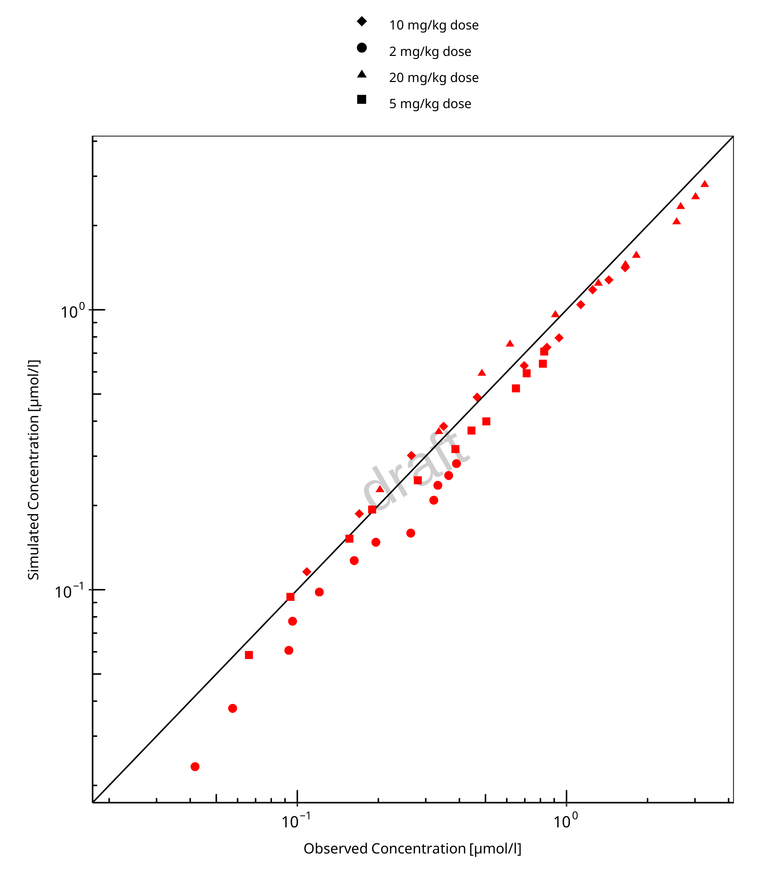
Figure 3-1: Goodness of fit plot for concentration in plasma.
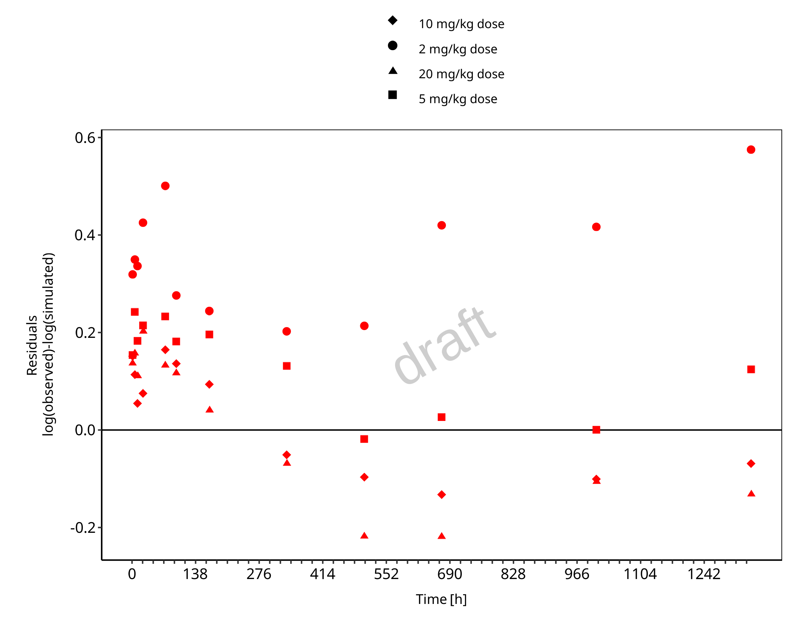
Figure 3-2: Goodness of fit plot for concentration in plasma.
3.3 Propofol Concentration-Time profiles
Simulated versus observed plasma concentration-time profiles of all data are listed below.
Figure 3-3: Time Profile Analysis
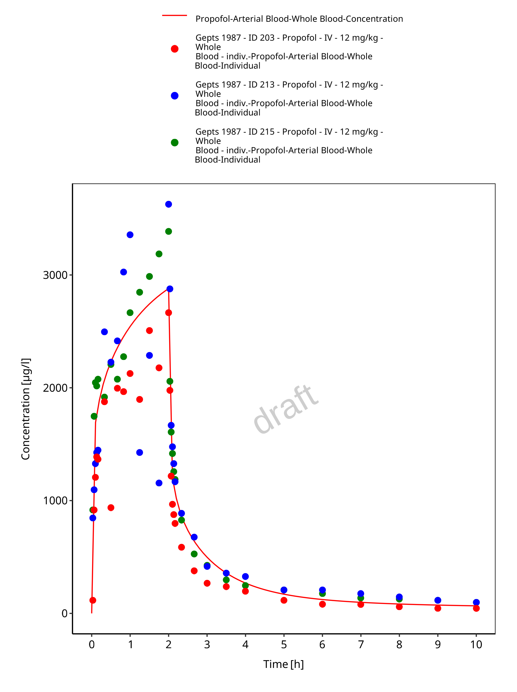
Figure 3-4: Time Profile Analysis 1
Figure 3-5: Time Profile Analysis
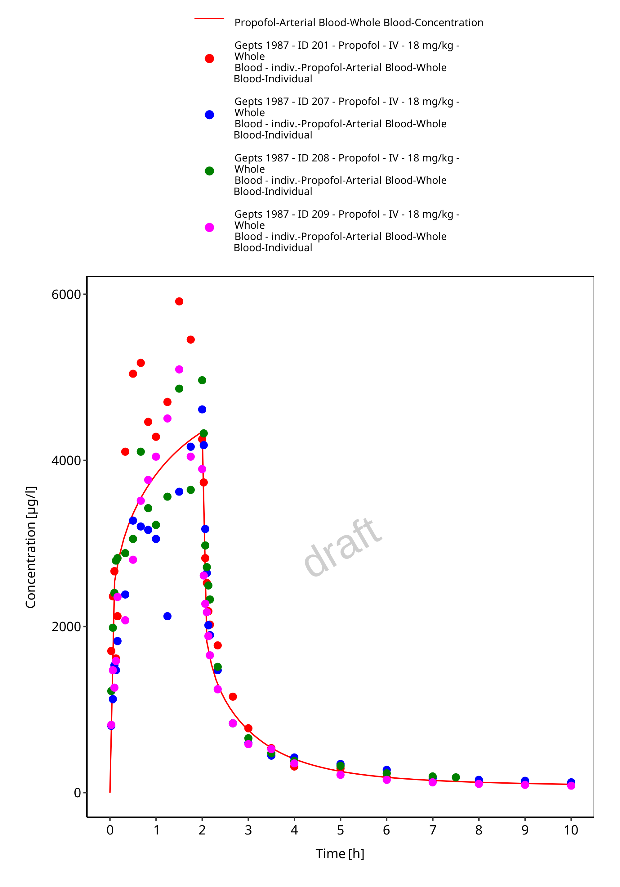
Figure 3-6: Time Profile Analysis 1
Figure 3-7: Time Profile Analysis
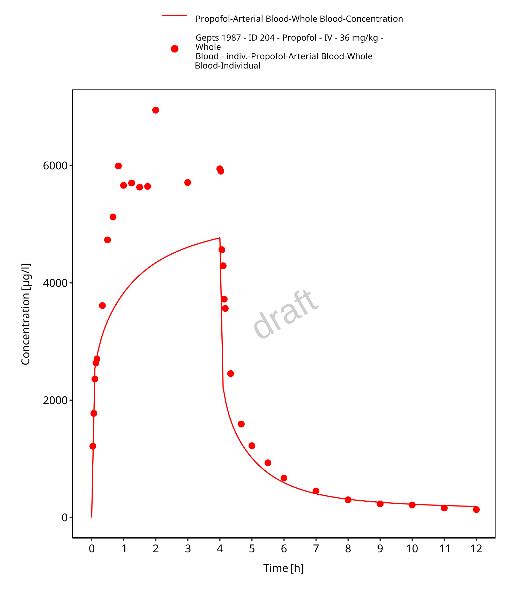
Figure 3-8: Time Profile Analysis 1
Figure 3-9: Time Profile Analysis
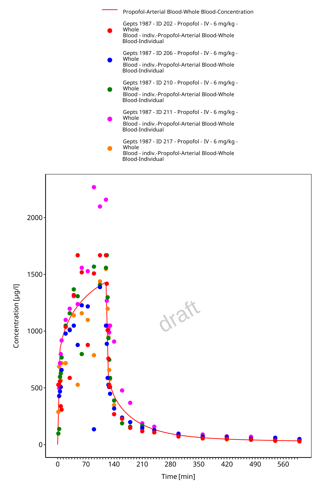
Figure 3-10: Time Profile Analysis 1
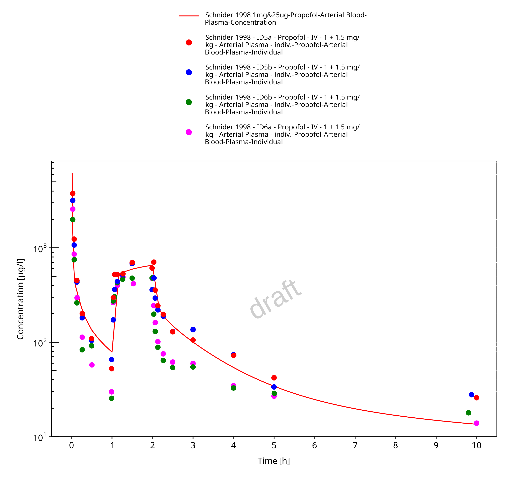
Figure 3-11: Time Profile Analysis
Figure 3-12: Time Profile Analysis 1
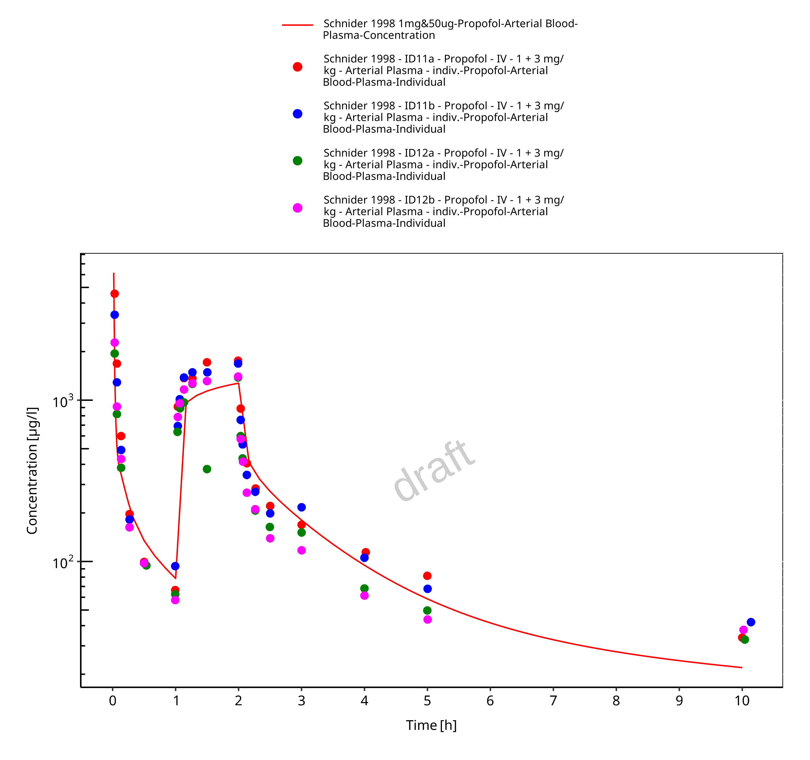
Figure 3-13: Time Profile Analysis
Figure 3-14: Time Profile Analysis 1
Figure 3-15: Time Profile Analysis
Figure 3-16: Time Profile Analysis 1
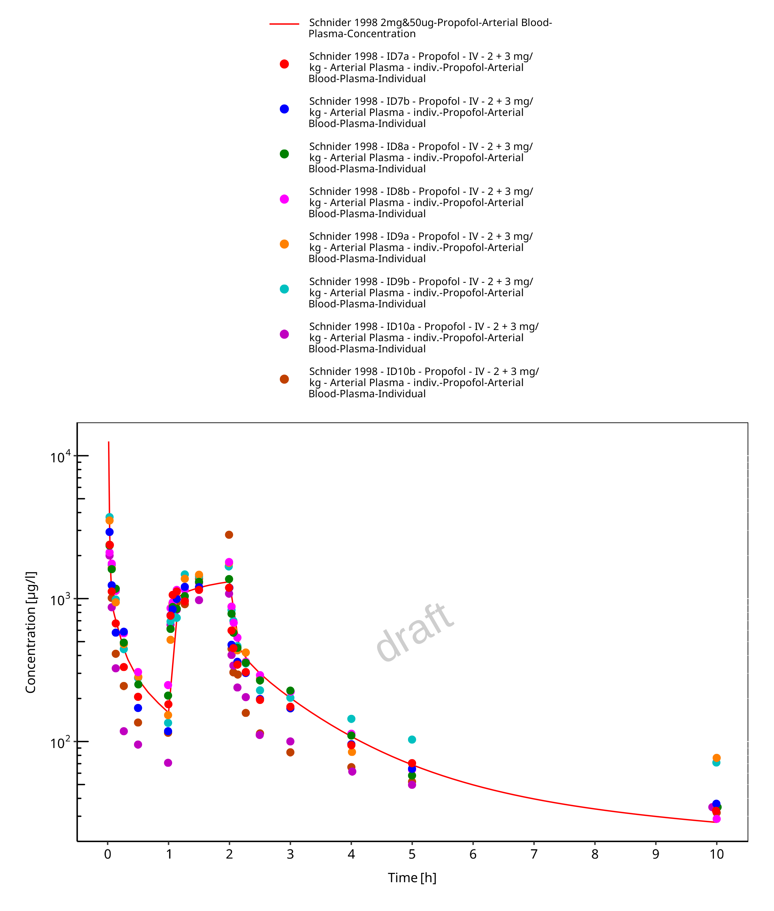
Figure 3-17: Time Profile Analysis
Figure 3-18: Time Profile Analysis 1
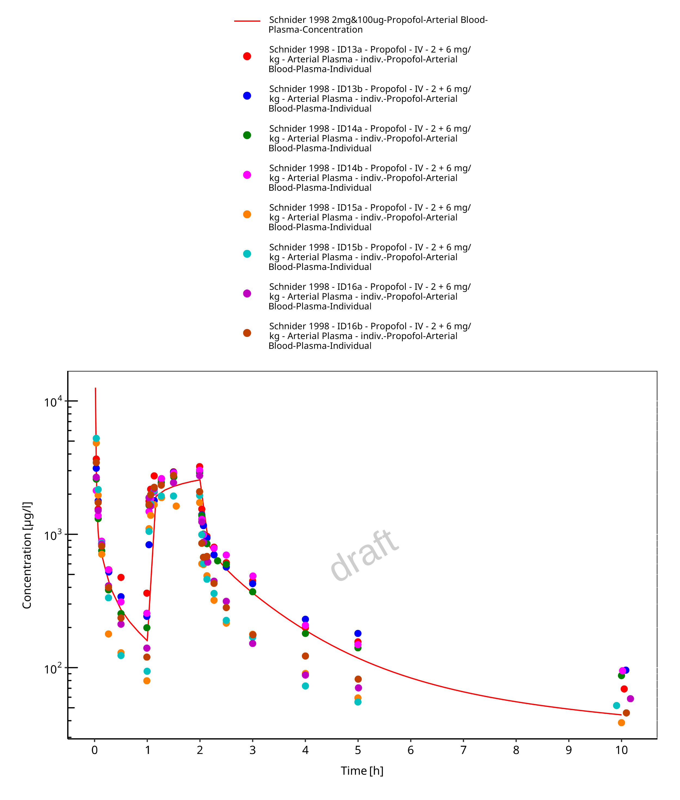
Figure 3-19: Time Profile Analysis
Figure 3-20: Time Profile Analysis 1
Figure 3-21: Time Profile Analysis
Figure 3-22: Time Profile Analysis 1
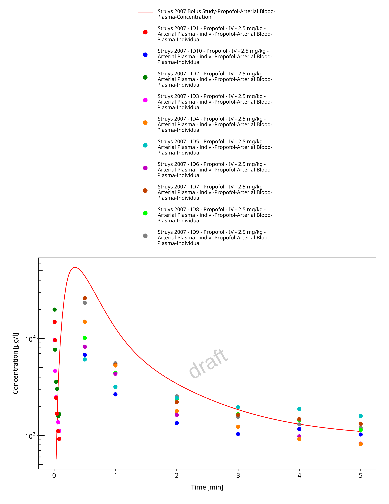
Figure 3-23: Time Profile Analysis
Figure 3-24: Time Profile Analysis 1
4 Conclusion
The final propofol PBPK model applies metabolism by UGT1A9, CYP2B6 and glomerular filtration and adequately describes the pharmacokinetics of propofol in adults receiving intravenous bolus and continuous infusion of propofol ranging from 1 mg/kg to 36 mg/kg.
This model could be applied for the investigation of drug-drug interactions (DDI), and translation to special populations such as pediatrics with regard to UGT1A1 and CYP2B6 metabolism.
5 References
Al-Jahdari 2006 Al-Jahdari WS, Yamamoto K, Hiraoka H, Nakamura K, Goto F, Horiuchi R. Prediction of total propofol clearance based on enzyme activities in microsomes from human kidney and liver. Eur J Clin Pharmacol. 2006 Jul;62(7):527-33. doi: 10.1007/s00228-006-0130-2. Epub 2006 Jun 9.
Barter 2007 Barter ZE, Bayliss MK, Beaune PH, Boobis AR, Carlile DJ, Edwards RJ, Houston JB, Lake BG, Lipscomb JC, Pelkonen OR, Tucker GR, Rostami-Hodjegan A. Scaling factors for the extrapolation of in vivo metabolic drug clearance from in vitro data: reaching a consensus on values of human microsomal protein and hepatocellularity per gram of liver.Curr Drug Metab. 2007 Jan;8(1):33-45. doi: 10.2174/138920007779315053.
Court 2005 Court M, Isoform‐Selective Probe Substrates for In Vitro Studies of Human UDP‐Glucuronosyltransferases. Methods Enzymol. 2005;400:104-16. doi: 10.1016/S0076-6879(05)00007-8.
Drugbank.ca (https://www.drugbank.ca/drugs/DB00818)
Gepts 1987 Gepts E, Camu F, Cockshott ID, Douglas EJ. Disposition of propofol administered as constant rate intravenous infusions in humans. Anesth Analg. 1987 Dec;66(12):1256-63.
Kuepfer 2016 Kuepfer L, Niederalt C, Wendl T, Schlender JF, Willmann S, Lippert J, Block M, Eissing T, Teutonico D. Applied Concepts in PBPK Modeling: How to Build a PBPK/PD Model.CPT Pharmacometrics Syst Pharmacol. 2016 Oct;5(10):516-531. doi: 10.1002/psp4.12134. Epub 2016 Oct 19.
Mazoit 1999 Mazoit JX, Samii K. Binding of propofol to blood components: implications for pharmacokinetics and for pharmacodynamics. Br J Clin Pharmacol, 47 (1999), pp. 35-42.
Nishimura 2006 Nishimura M and Naito S. Tissue-specific mRNA expression profiles of human phase I metabolizing enzymes except for cytochrome P450 and phase II metabolizing enzymes. Drug Metab Pharmacokinet. 21(5). 357-74. 2006.
Oda 2001 Oda Y, Hamaoka N, Hiroi T, Imaoka S, Hase I, Tanaka K, Funae Y, Ishizaki T, Asada A. Involvement of human liver cytochrome P4502B6 in the metabolism of propofol. Br J Clin Pharmacol. 2001 Mar; 51(3): 281–285. doi: 10.1046/j.1365-2125.2001.00344.x
Ohtsuki 2012 Ohtsuki S, Schaefer O, Kawakami H, Inoue T, Liehner S, Saito A, Ishiguro N, Kishimoto W, Ludwig-Schwellinger E, Ebner T, Terasaki T. Simultaneous absolute protein quantification of transporters, cytochromes P450, and UDP-glucuronosyltransferases as a novel approach for the characterization of individual human liver: comparison with mRNA levels and activities. Drug Metab Dispos. 2012 Jan;40(1):83-92. doi: 10.1124/dmd.111.042259.
PK-Sim Ontogeny Database Version 7.3 (https://github.com/Open-Systems-Pharmacology/OSPSuite.Documentation/blob/38cf71b384cfc25cfa0ce4d2f3addfd32757e13b/PK-Sim%20Ontogeny%20Database%20Version%207.3.pdf)
Restrepo 2009 Restrepo JG, Garcia-Martín E, Martínez C, Agúndez JAG. Polymorphic drug metabolism in anaesthesia. Curr Drug Metab. 2009 Mar;10(3):236-46. doi: 10.2174/138920009787846305.
Rodrigues 1999 Rodrigues AD. Integrated cytochrome P450 reaction phenotyping: attempting to bridge the gap between cDNA-expressed cytochromes P450 and native human liver microsomes. Biochem Pharmacol. 465-80. 57 (5). 1999.
Schlender 2016 Schlender JF, Meyer M, Thelen K, Krauss M, Willmann S, Eissing T, Jaehde U. Development of a Whole-Body Physiologically Based Pharmacokinetic Approach to Assess the Pharmacokinetics of Drugs in Elderly Individuals. Clin Pharmacokinet. 2016 Dec;55(12):1573-1589.
Schnider 1998 Schnider TW, Minto CF, Gambus PL, Andresen C, Goodale DB, Shafer SL, Youngs EJ. Anesthesiology. 1998 May;88(5):1170-82. doi: 10.1097/00000542-199805000-00006.
Struys 2007 Struys MMRF, Coppens MJ, De Neve N, Mortier EP, Doufas AG, Van Bocxlaer JFP, Shafer SL. Anesthesiology. 2007 Sep;107(3):386-96. doi: 10.1097/01.anes.0000278902.15505.f8.
Takizawa 2005 Takizawa D, Hiraoka H, Goto F, Yamamoto K, Horiuchi R. Human kidneys play an important role in the elimination of propofol. Anesthesiology. 2005 Feb;102(2):327-30. doi: 10.1097/00000542-200502000-00014.